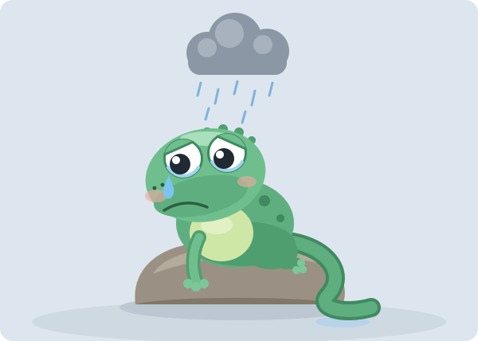
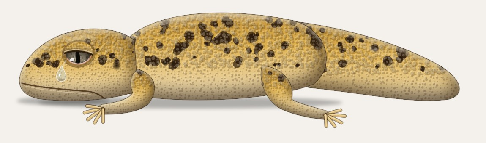
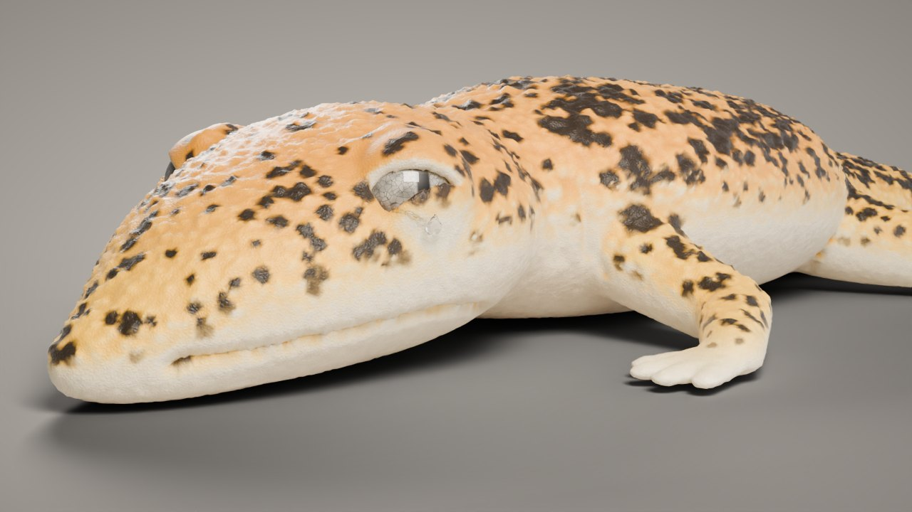
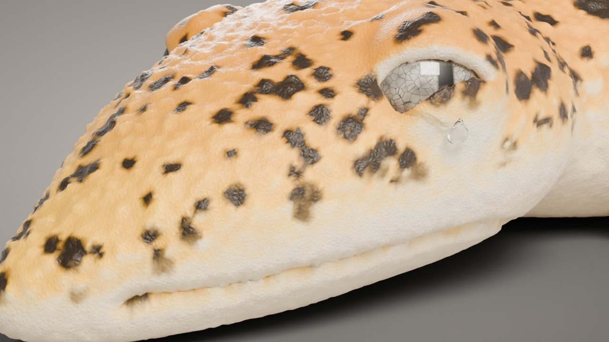

From a doodle of a sad reptile to a 163,520-vertex sculpt
This began as a request for a quick cartoon of a very sad reptile. It went through a painted 2D version and ended as a leopard gecko sculpted in Blender. Every brush stroke was written as code rather than dragged with a mouse.
Spin the model on the left. As you scroll, it swaps to the matching stage of the sculpt and the camera moves to whatever that step changed.
Five prompts, in order
The whole project came out of one short chat. These are the prompts exactly as typed, each followed by what came back.
draw me a sketch of a very sad reptile, in a cgi cartoon style

ok make it more photorealistic, and drop the clouds and the rock it's on. just the sad gecko

ok, now using blender, use sculpt brushes to make a 3d model version of this

now make a repo 'scultera' where you show the 3d model, and can zoom and spin around it, and describe/show the sculpting steps, and the process
This page: the model you can spin on the left, and the steps below.
Include the original images in the early part of this chat, what the prompts were, that led to this
This section.
Start from the feeling
The first sketch was a cartoon (prompt 1 above). Sadness in a cartoon comes from a few signals: brows tilted up in the middle, oversized wet eyes, a drooping head and a limp tail. Moving to realism meant keeping the signals and dropping the cartoon exaggeration.
Four signals made it into the sculpt: heavy upper lids that cover more at the back of the eye, a head resting on the floor, a mouth line that dips at the corner, and one tear.
Blockout with distance-field primitives
Most sculpts start from a sphere or a box. This one starts from a signed distance field, a function that says how far any point in space is from the surface. The body is a spine of 20 hand-tuned cross-sections (width, height, height above the floor) running from snout to tail tip, interpolated with cubic splines.
The spine is sampled every 0.07 units as an ellipsoid. Each limb is a chain of spheres swept from shoulder to elbow to wrist, or hip to knee to ankle. Each foot gets five toes. The ellipsoids are blended with a smooth minimum, so they fuse like soft clay instead of meeting at hard seams.
The first pass was too tubular and toy-like, and the grid clipped a hole in the back. The second pass flattened the body, widened the head into a triangle and slimmed the limbs. Leopard geckos are flat, wide animals.
Carve the eyes before meshing
The eye sockets are cut while the shape is still a distance field: a sphere is subtracted from the head at each eye. The lids are spherical shells, slightly larger than the eyeball, sliced by a plane. The upper lid keeps everything above the plane. The lower lid keeps a thin crescent at the bottom.
The sadness sits in that slicing plane. It's tilted toward the back of the head, so the lid hangs lower at the outer corner. Moving the plane from 3% to 10% below the eye's center turned a neutral face into a tired, heavy one.
# upper lid = shell ∩ above a tilted plane shell = abs(dist - 0.330) - 0.040 n_lid = normalize(up + 0.5 * back) # tilt toward back upper = max(shell, -0.105 - dot(p - c, n_lid))
Turn the field into a mesh
Marching cubes samples the field on a fine grid and builds triangles wherever the value crosses zero. Three passes of Laplacian smoothing then relax the faint stair-stepping a voxel grid leaves behind. The result is a dense, even mesh, which is what sculpting needs.
The wireframe is on for this step. Toggle it off in the top right.
Give it weight
Blender's sculpt brushes only run inside a live viewport with a mouse, so they can't be scripted directly. I rewrote them as small functions that push vertices around, using the same smooth falloff Blender uses: full strength at the brush center, fading to nothing at the edge.
Two Grab strokes drop the snout and turn the head slightly toward the viewer. Flatten then eases everything below the belly line onto the floor, so the chin and belly rest with weight instead of hovering. A head lying on the ground reads as "given up" from any angle.
Cut in the expression
The mouth is 30 Crease dabs per side. They follow a line that rises along the jaw and then dips at the corner, which is the downturn. A light Draw stroke just above the crease rolls the upper lip outward.
The rest are smaller strokes: nostrils, ear openings behind the jaw, brow ridges arching over each eye, three folds across the neck, folds at the armpits and hips, and rings every 0.3 units down the tail. Crease pushes inward and pinches the surrounding skin toward the line, so each cut gets a sharp bottom.
Grow the bumpy skin
Leopard geckos are covered in raised bumps called tubercles. 9,000 of them are scattered over the upper surfaces, which are found by checking where the surface faces upward. Each bump pushes outward along the surface direction.
Bumps are smaller on the head and limbs and skip the area around the eyes. Where neighbours overlap, the taller one wins rather than adding up, so they cluster naturally. A second layer of 60,000 tiny bumps adds fine grain everywhere.
Leopard spots, in vertex colours
Colour is painted straight onto the vertices, so there's no texture to unwrap. The same "faces upward" mask blends a cream belly into yellow sides and an orange back. Then 1,300 irregular dark spots are placed: smaller on the head and legs, with edges wobbled by noise. Bump tips are tinted paler, and the tail's underside gets a faint lavender-gray.
The first render came out washed-out and pastel. I had entered the colours as screen (sRGB) values, but Blender stores vertex colours as linear light. Converting them fixed it: the same numbers, read in a different color space.
The eyes do most of the acting
Each eyeball is a sphere set into its socket. The iris is procedural: pale silver with a network of dark veins, a darker ring at the edge and a vertical slit pupil, drawn a little wide as if in dim light. A glossy clear coat makes it look wet.
On the first attempt the eye pointed upward, so its pupil faced the ceiling and hid behind the lid. Rotating the gaze outward and down fixed the pupil and also made the gecko look sadder.
The tear is a tapered drop of glass-like material that bends light like water. A thin wet trail runs back up to the corner of the eye. For this web viewer, the procedural iris was converted into a 1024×512 image texture.
Studio light, then Cycles
Lighting is a warm key light, a cool fill, a strong rim light from behind and a low bounce light that stands in for light reflected off the floor. The floor only catches shadows. In the stills it's composited over a soft gradient so there's no horizon line.

Sculpt brushes, as code
Every brush here does the same three things. It finds the vertices within radius R of the brush center, weights each by a smooth falloff, and moves them. The brushes differ only in which direction they move things.
# t = distance / R, clamped to 0..1 falloff = 1 - (3t² - 2t³) draw : v += n · s · f # out along normal crease : v += -n · s · f - pinch · f · tangent / 2 grab : v += Δ · f # drag by a vector smooth : v += λ · f · (mean(neighbours) - v)
A stroke is a path of dabs spaced about a third of the radius apart, snapped to the nearest surface point. That's essentially what Blender does as you drag a brush, minus the mouse.